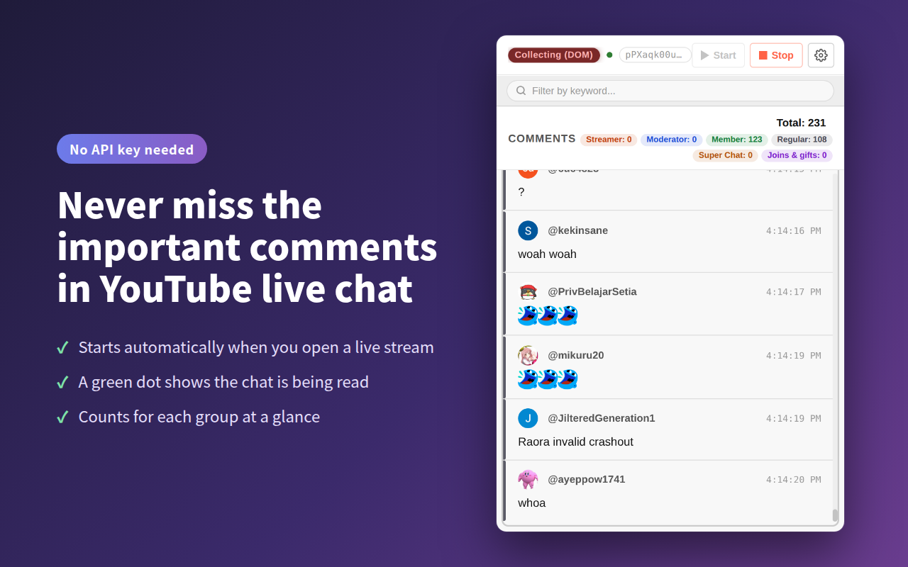
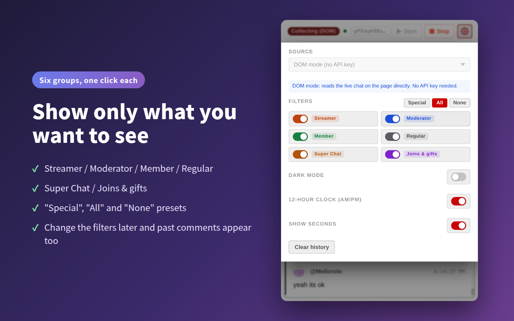
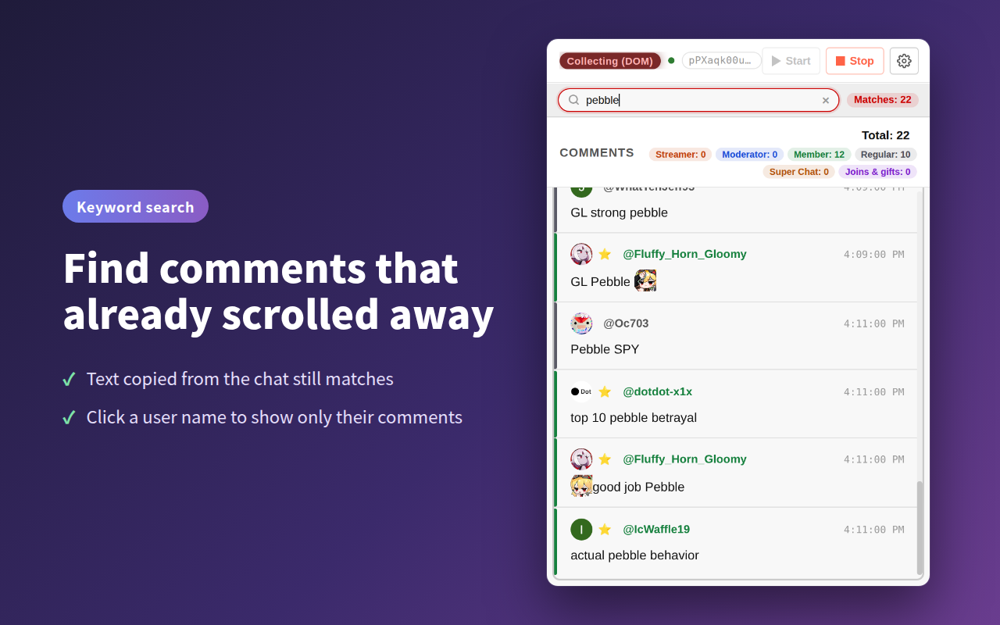

Never miss the comments that matter
A Chrome extension that pulls streamer, moderator and member comments, Super Chats and memberships out of YouTube live chat and lists them in one place — so a reply from the streamer never scrolls away unseen.
Available on the Chrome Web Store · English / Japanese

See it in one minute
Install it, open a stream, and that's it. Here's how it looks in action.
Sound familiar?
The livelier the stream, the faster the chat flies by.
-
The streamer replied to you in chat — but by the time you noticed, it was already gone.
-
A moderator posted an important link or schedule, buried under hundreds of other messages.
-
You want to look back at the Super Chats and new members, but scrolling back is a pain.
Six groups. Show only what you want.
Who sent it and what kind of message it is are separate switches. Super Chats can come from any viewer, so filtering by role alone never hides them.
- Streamer
Messages from the streamer themselves
- Moderator
Notices and updates from the channel's moderators
- Member
Fans who support the channel with a membership
- Regular
Everyone else in the chat
- Super Chat
Super Chats and Super Stickers, with the amount — stickers shown as images
- Joins & gifts
New members, membership milestones and gifted memberships
Change the filters later — past comments appear too
Everything is collected; the filters only change what's shown. Decide you want regular comments after all, and everything hidden until then shows up at once. Switch it all with the "Special", "All" and "None" presets.

Find comments that already scrolled away
Search every collected comment by keyword, with the number of hits. Text copied from the chat, full-width vs. half-width characters and invisible characters all just work.

And there's more
For viewers and streamers alike.
- Click a name to see only that person's comments — or Alt+click (Option+click on Mac) a name in YouTube's chat to open the popup filtered to them
- Picks up the past comments still in the chat when you start
- Starts collecting automatically when you open a live stream
- Super Stickers and member-only emoji shown as images, just like in the chat
- Count badges for each role and type — see how many Super Chats a stream had
- Comments are saved per stream and survive closing the popup (last 5 streams)
- Shows whether the chat is being read (the green dot)
- Dark mode for the popup and the settings page
- 24-hour or 12-hour (AM/PM) time, with or without seconds
- Stays fast with thousands of comments
- English and Japanese, following your browser's language
Three steps to get started
No setup required.
Add to Chrome
Install it for free from the Chrome Web Store.
Open a live stream
Open any YouTube live stream and collecting starts automatically.
Click the icon
Click the toolbar icon and the important comments are waiting for you.
💡 If it doesn't start on its own, press "Start" in the popup. You only need to enter an API key in the settings if you choose the YouTube Data API v3 mode.
Built to be trusted
It asks only for the permissions it needs.
🔒 Your data stays local
All comments are stored in your own browser and never sent anywhere.
👀 Reads only the live chat
It never looks at the URLs or titles of your other tabs. The only outside connection is the YouTube Data API v3, and only in API mode.
🆓 Free and open source
The source code is on GitHub, so anyone can check what it does.
FAQ
Does it cost anything?
No. Every feature is free.
Do I need an API key?
No. The default "DOM mode" reads the chat on the page directly, so it works right after you install it. You only need an API key if you switch to "API mode", which uses the YouTube Data API v3.
Does clicking a name still open YouTube's menu?
Yes. A plain click still opens YouTube's "Block" and "Report" menu. Filtering only happens when you hold Alt (Option on Mac) while clicking.
Which browsers are supported?
It's built for Google Chrome. It may also work in other Chromium-based browsers that support Chrome Web Store extensions.
Never miss the comments that matter.
Free, no API key needed. Use it on your very next stream.